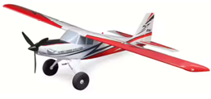
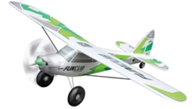
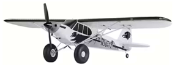
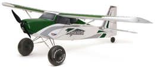
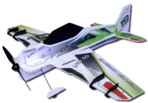

Din första modell - Fasta vingar/Flygplan
Det finns många olika modeller att köpa, men du bör tänka till på vilken som är den lämpligaste modellen att börja med. Jag antar att du flyger med en lärare i början, då lär du dig fortare och risken för skador blir minimal.
Ett bra val är ofta att köpa en begagnad (och lämplig) modell av någon i flygklubben, diskutera detta med din lärare. Tyvärr hittar du inte alltid något i den egna klubben och då får du leta begagnat på andra ställen eller köpa nytt.
Nedan finns några förslag du kan leta efter. Förslagen är gjorda att de inte är för svåra men inte heller för enkla så du tappar intresse eller lär dig fel flygteknik. Den ska inte vara för liten så den blir vindkänslig och inte för stor då priset på både batteri och modell går upp. Tycker även att högvingat med liten V-profil, stora hjul fram med sporrhjul är en fördel.
Modeller kan oftast köpas i olika utförande så ha koll på vad du köper.
- PNF - ”Plug and fly” & PNP - ”Plug and play” - Innebär att batteri och mottagare saknas. Denna kan användas oavsett vad du har för radioutrustning. Detta kräver du köper en lämplig mottagare själv och tar hjälp med att sätta upp sändaren för modellen.
- BNF - ”Bind and fly” - Innebär att modellen har en monterad mottagare men batteri saknas. Riktar sig oftast till Spektrum ägare och kräver då en Spektrum sändare. Manualer berättar vilka inställningar du ska göra i sändare. Modellerna kan användas för andra radiosystem också, men då får du ta bort mottagaren och blir då som en PNF-modell till ett lite högre pris.
- RTF - ”Ready to fly” - Brukar innebära komplett modell med batteri och mottagare men även sändare och enklare laddare. Tänk på att sändaren troligen inte kan återanvändas för andra modeller. Laddaren har troligen inte alla funktioner du behöver så även denna kommer troligen behöva ersättas längre fram. Inget jag rekommenderar.
- KIT - Detta är oftast bara modellen som ingår utan ”innehåll” samt att mer byggarbete kvarstår. Inget jag rekommenderar till en som är ny.
En bra modell att börja med kännetecknas av följande:
- Högvingad med V-profil - Vingarna kommer längre bort från marken. Kroppen hänger under en vinge som vill plana ut själv så det blir stabilare.
- Vingspann - "Smal" (mindre än 1.3m) är billigare och billigare batteri men vindkänslig. "Bred" (mer än 1.5m) är dyrare och dyrare batteri men stabilare.
- Stora hjul - Rullar lättare i gräset. Bra vid start och landning.
- Sporrhjul - Mer hållbart än styrbart noshjul. Bra vid landning.
- Batteridriven - Enklare med batteridriven mot förbränningsmotorer (inget att ställa in osv.). Om du inte har tänker flyga med el på sikt kan du välja förbränningsmotor direkt klarar du dig med en enklare (Mindre batteri som bara används för mottagare och servo).
- Medelstor motor - Med svag motor är det svårt för läraren att rädda modellen ur vissa situationer. Med för stark motor blir modellen stirrigt för eleven.
- Byggd i "foam" - En modell i foam (Frigolit, EPO, skumvåffla och alla andra "namn") är enklare att laga än balsa modeller.
| Om du flyger med Spektrum sändare finns här några BNF för enklare setup med sändaren. | |
|  | E-Flite Turbo Timber Evolution 1.5m
Finns att köpa i många butiker. (Mer prisvärd för Spektrum användare) Har gyro (AS3X) som gör att du upplever modeller som större (lugnare) än vad den är (färdigprogrammerad och klar). Finns som BNF (Spektrum) och PNF (Denna har inte gyro). |
| Mycket bra kvalitetsmodell som ofta används för skolflyg. | |
|  | Multiplex - Funcub NG 1.4m
Finns att köpa i många butiker. Finns som PNF och KIT. |
| Andra bra alternativ. | |
|  | FMS - PA18 1.3m
Finns att köpa i många butiker. Har extern gyro som gör att du upplever modeller som större (lugnare) än vad den är. Finns bara som PNF. |
|  | Durafly - Tundra V3 1.3m
Billigare, säljs av Hobbyking. Finns bara som PNF. |
| Inomhusmodeller. Här väljer du modeller byggda i EPP. | |
|  | RC Factory - Crack Yak Superlite 0.8m.
Finns att köpa i många butiker. Inte tjockaste materialet som gör modellen tung och måste flygas snabbt, men ändå hållbar. Inte tunnaste materialet så få kolfiberstag används, vilket gör det lättare att laga. Finns bara som KIT. Vissa butiker säljer dem även i paket med servo, motor, prop och fartreglage. |
Några av de listade utomhusmodellerna finns även i en större variant. Kommer du över en sådan till ett bra pris fungerar det också men räkna med att batterierna kostar mer och eventuellt behövs även en kraftigare laddare för att hålla nere laddningstiden.
Några av modellerna finns även i ”UMX”-utförande som då är en mycket mindre version. Inget jag skulle rekommendera att flyga dubbelkommando med.
När du köpt en modell.
- Glöm inte att märka den med ditt Operatörs-ID innan första flygningen.
- Programmera in throttle cut, så du (eller någon annan) inte av misstag råkar starta motorn för att undvika alla risker runt detta.
- Låt en som kan flyga (läraren) besiktiga, testflyga och trimma den.
- Kör sedan dubbelkommando, igen, men nu med din egen modell.